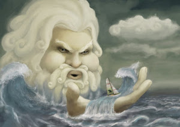

Passado da energia Eólica
É difícil apontar o momento exato de quando surgiu a energia eólica, mas o que se sabe é que num passado
distante, no período Antes de Cristo, a força mecânica dos ventos já era utilizada pelo
homem para impulsionar velas acopladas a embarcações, moinhos de grãos e no bombeamento de água,
substituindo a força humana ou animal.

Acredita-se que o primeiro moinho de vento utilizado com o intuito de produzir energia
elétrica foi
construído em 1887, na Escócia. O professor James Blyth instalou uma torre de dez
metros de altura no
jardim de sua própria residência, e a energia gerada era utilizada para iluminar o local.
Na década de 1890, o inventor e meteorologista dinamarquês Poul la Cour deu mais um
passo importante ao
constatar que turbinas com menos pás eram mais rápidas e eficientes para a produção de eletricidade. Em
1897, com financiamento do governo, construiu uma turbina, que posteriormente seria usada na usina do
vilarejo de Askov. Outra contribuição importante de Poul la Cour foi que ele fundou a primeira
associação sobre energia eólica do mundo.
Os integrantes, além de aprenderem a lidar com máquinas elétricas, tinham aulas de contabilidade,
geometria, física e alemão.
Como se formam os ventos?
Para entender melhor o funcionamento dos geradores eólicos, é preciso saber que o vento é o resultado de
correntes de conversão na atmosfera da
Terra e que são impulsionadas pela energia térmica gerada pelo Sol. Ou seja,
o vento é um tipo de
energia solar
e quando não há Sol, ele não existe.
O movimento do ar, que conhecemos como vento, surge na superfície da terrestre onde há solo e água. O
calor do Sol aquece mais rápido o solo que a água e o ar aquecido é mais leve, por isso sobe. À noite, o
ar sobre a água é mais quente e é substituído pelo ar mais fresco do solo.
Esse movimento gera energia cinética que pode ser transformado em energia elétrica a partir da
movimentação da turbinas.
Como funciona o sistema de energia eólica?
A Energia Eólica é o processo pelo qual o vento é transformado em energia cinética e a partir dela em
eletricidade com o uso de equipamentos específicos.
Por meio de um aerogerador, que transforma a energia cinética das correntes de ar em energia
elétrica. O
processo de extração é realizado principalmente graças ao rotor (que transforma a
energia cinética em
energia mecânica) e ao gerador (que transforma dita energia mecânica em elétrica).
Vantagens da energia eólica
- A energia eólica é econômica;
- Gera emprego e permite o crescimento da indústria;
- Reduz a dependência de combustíveis fósseis;
- É uma fonte de combustível limpa;
- É sustentável
- As turbinas eólicas podem ser construídas em fazendas ou ranchos existentes
- O vento é uma fonte inesgotável de energia
Desvantagem da energia eólica
- Boas instalações eólicas terrestres geralmente estão localizadas em locais remotos, longe das
cidades onde a eletricidade é necessária;
- As turbinas podem causar poluição sonora e estética;
- As plantas eólicas podem impactar a vida selvagem local.
- Aproveitar o vento requer altos custos iniciais;
- A geração de energia não é tão eficaz para residências individuais ou instalações de pequena escala;
- É preciso criar um grande parque eólico para comportar os aerogeradores;
- Causa erosão do solo;
Dados sobre a energia eólica
Energia eólica do futuro
Em 2013, pesquisadores da Delft University of Technology, na Holanda, eliminaram a necessidade de mover
componentes mecânicos e criaram o EWICON, que significa Electrostatic Wind Energy Converter, dando
início ao desenvolvimento do conceito de gerador eólico de íons. Embora ainda esteja em desenvolvimento,
oferece custos de manutenção significativamente mais baixos, menos desgaste e sem problemas de ruído.
EWICON utiliza o vento para criar um fluxo de partículas
carregadas através do ar que pode ser aproveitado para produzir eletricidade. Nesse caso, as gotículas
de água são usadas para manter uma carga positiva e, quando o vento as sopra, esse movimento das
gotículas produz eletricidade que pode ser transferida para a rede.
De acordo com os desenvolvedores, o sistema pode ser facilmente instalado em terra ou no mar, bem como
turbinas eólicas comuns, mas o design é particularmente adequado para áreas urbanas. Parques eólicos
expansivos geralmente não são viáveis em grandes cidades devido à falta de espaço, mas um ou mais
EWICONs podem ser incorporados à arquitetura existente apenas alterando sua forma. Além disso, com a
falta de peças móveis, exigiria menos manutenção, produzindo menos ruído e sem sombras cintilantes.